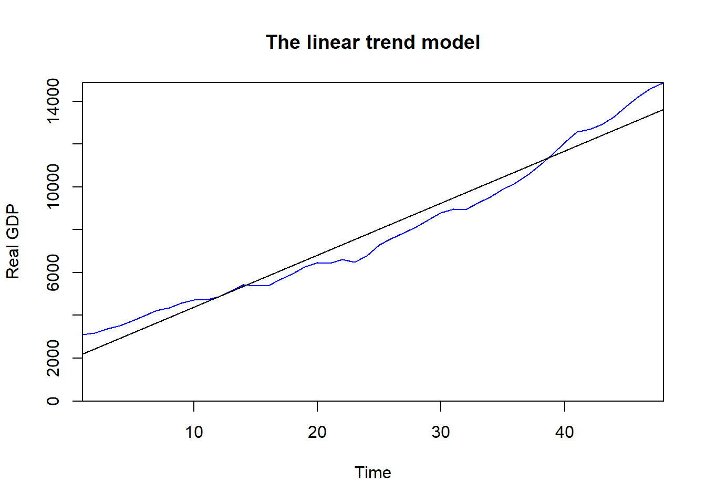

Chapter 7 Regression analysis
7.1 Simple regression model
Text and the derivation above rely on the suggested literature: Wooldridge, J. Introductory Econometrics: A Modern Approach (Chapter 2) and Dougherty, C. Introduction to Econometrics (Chapter 1). We are given the following set of values:
We want to find the line that minimizes the sum of squared residuals, i.e. the squared distance between the observed value and the line. In a simple bivariate case as this one, we have to find a slope (\(\hat{\beta_1}\)) and an intercept (\(\hat{\beta_0}\)) for the line so that the sum of squared residuals is as small as possible.
\[\begin{align} y_i & = \hat{y_i} + \hat{u_i} \\ \hat{y_i} & = \hat{\beta_0} + \hat{\beta_1}x_i \\ y_i & = \hat{\beta_0} + \hat{\beta_1}x_i + \hat{u_i} \\ \hat{u_i} & = y_i - \hat{y_i} \\ \hat{u_i} & = y_i - (\hat{\beta_0} + \hat{\beta_1}x_i) \end{align}\]
We have now a function that we want to minimize with respect to \(\hat{\beta_0}\) and \(\hat{\beta_1}\).
\[\begin{align} f(\hat{\beta_0}, \hat{\beta_1}) = \sum_{n=1}^{3} \hat{u_i}^2 = \sum_{n=1}^{3} (y_i - \hat{y_i})^2 = \sum_{n=1}^{3} (y_i - (\hat{\beta_0} + \hat{\beta_1}x_i))^2 = \sum_{n=1}^{3} (y_i - \hat{\beta_0} - \hat{\beta_1}x_i)^2 \end{align}\]
We now take the derivative of (6) with respect to \(\hat{\beta_0}\) and set it equal to 0. We then do the same thing for \(\hat{\beta_1}\). These are the so-called .
\[\begin{align} \dfrac{\partial f(\hat{\beta_0}, \hat{\beta_1})}{\partial \hat{\beta_0}} & = -2\sum_{n=1}^{3} (y_i - \hat{\beta_0} - \hat{\beta_1}x_i) = 0 \\ \dfrac{\partial f(\hat{\beta_0}, \hat{\beta_1})}{\partial \hat{\beta_1}} & = -2\sum_{n=1}^{3} x_i (y_i - \hat{\beta_0} - \hat{\beta_1}x_i) = 0 \end{align}\]
x <- c(-3, 3, 5) # Variable x
y <- c(5, 6, 2) # Variable y
# Plot
plot(x, y, # First variable on the h. axis then the variable on the v. axis
xlim=c(-4,6), # Length of the x-axis
ylim=c(-4, 10)) # Length of the y-axis
abline(v=0) # Line for the vertical axis
abline(h=0) # Line for the horizotal axis
# Fitting the line to the data
abline(lm(y ~ x), # Slope and intercept are calculated automatically using the lm() function
col = "red") # Color of the line
# Line for the mean of y
abline(h = mean(y),
col = "green",
lty = 3)
legend("bottomright", # Position of the legend
title = "LEGEND", # Title of the legend
expression(hat(y[i]) == hat(beta)["0"] + hat(beta)["1"]%.%x[i], bar(y)), # Names of the variables
col = c("red", "green"), # Colors of the lines
lty = c(1, 3), # Type of lines
cex = 1, # Dimesions
horiz = TRUE, # Option horizontal
bg = "transparent", # Background
bty = "n") # No box around the legend
Slope coefficient
beta_1 <- cov(y, x) / var(x)Intercept
beta_0 <- mean(y) - beta_1 * mean(x)We calculate the fitted values
y_hat <- beta_0 + beta_1 * (x)
y_hat## [1] 5.5 4.0 3.5We calculate the residuals
u_hat <- y - y_hat
u_hat## [1] -0.5 2.0 -1.5We calculate the residual sum of squares (SSR)
SSR <- sum(u_hat^2)
SSR## [1] 6.5We calculate the explained sum of squares (SSE)
SSE <- sum((y_hat-mean(y))^2)
SSE## [1] 2.166667We can calculate the sum of square total (SST)
SST <- SSR + SSE
SST## [1] 8.666667Let’s check
var(y)*(length(y)-1)## [1] 8.666667We can finally calculate the R2
R2 <- SSE / SST
R2## [1] 0.25Alternatively
R2 <- 1 - SSR/SST
R2## [1] 0.25We can also calculate the root mean squared error (RMSE); Degrees of freedom correction = 2
RMSE <- sqrt(SSR/1)
RMSE## [1] 2.54951We can now compare our work with the output of the lm() function
model1 <- lm(y ~ x)stargazer(model1,
type = "html",
dep.var.labels = c("y"),
#column.labels = c(""),
covariate.labels = c("x"),
colnames = FALSE,
model.numbers = FALSE,
keep.stat = c("n", "rsq", "ser"))| Dependent variable: | |
| y | |
| x | -0.250 |
| (0.433) | |
| Constant | 4.750 |
| (1.639) | |
| Observations | 3 |
| R2 | 0.250 |
| Residual Std. Error | 2.550 (df = 1) |
| Note: | p<0.1; p<0.05; p<0.01 |
x <- c(-3, 3, 5) # Variable x
y <- c(5, 6, 2) # Variable y
# We can fit a quadratic model; remember the general equation of the parabola f(x) = c + b*x + a*x^2
model2 <- lm(y ~ x + I(x^2))
model2##
## Call:
## lm(formula = y ~ x + I(x^2))
##
## Coefficients:
## (Intercept) x I(x^2)
## 7.9375 0.1667 -0.2708beta_0 <- unname(coef(model2)["(Intercept)"])
beta_1 <- unname(coef(model2)["x"])
beta_2 <- unname(coef(model2)["I(x^2)"])
# We use the estimated parameters to plot a parabola
mod <- function(x) {x^2 * beta_2 + x * beta_1 + beta_0}
plot(x, y,
xlim = c(-10, 10),
ylim = c(-10, 10))
curve(mod, from = -10, to = 10, add = TRUE)
abline(v = 0) # Line for the vertical axis
abline(h = 0) # Line for the horizontal axis
points(-3, 5, col = "black", pch = 19, cex = 1) # Mark the point in black
points(3, 6, col = "black", pch = 19, cex = 1) # Mark the point in black
points(5, 2, col = "black", pch = 19, cex = 1) # Mark the point in black
# We can use the estimated coefficients to simulate some new data and then fit a parabola again
# and a linear model. We then compare the R2.
varx <- -10:10
vary <- beta_0 + rnorm(21, 0, 2) + (varx) * beta_1 + (varx)^2 * beta_2
# Estimating the new parameters (they are very similar)
model3 <- lm(vary ~ varx + I(varx^2))
# We calculate the predicted values
plot(varx, vary, xlim = c(-10, 10), ylim = c(-10, 10))
vary_new <- predict(model3)
matlines(varx, vary_new)
abline(h = 0, lty = 3)
abline(v = 0, lty = 3)
# We mark the original observations. They are very very close to the fitted model
points(-3, 5, col="black", pch = 19, cex = 1)
points(3, 6, col="black", pch = 19, cex = 1)
points(5, 2, col="black", pch = 19, cex = 1)
# We can now try to fit a linear model
model4 <- lm(vary ~ varx)
# Overlap the linear model to the previous plot
abline(model4)
Which model has the largest \(R^2\)?
stargazer(model4,
model3,
type = "html",
dep.var.labels = c("y"),
column.labels = c("1", "2"),
covariate.labels = c("x", "x"),
colnames = FALSE,
model.numbers = FALSE,
keep.stat = c("n", "rsq", "ser"))| Dependent variable: | ||
| y | ||
| 1 | 2 | |
| x | 0.162 | 0.162* |
| (0.360) | (0.080) | |
| x | -0.284*** | |
| (0.015) | ||
| Constant | -2.140 | 8.281*** |
| (2.182) | (0.724) | |
| Observations | 21 | 21 |
| R2 | 0.010 | 0.954 |
| Residual Std. Error | 9.999 (df = 19) | 2.208 (df = 18) |
| Note: | p<0.1; p<0.05; p<0.01 | |